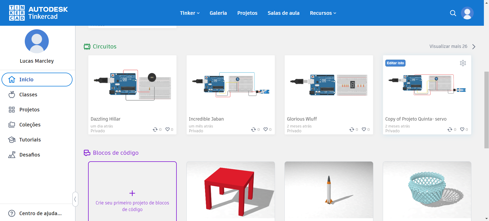
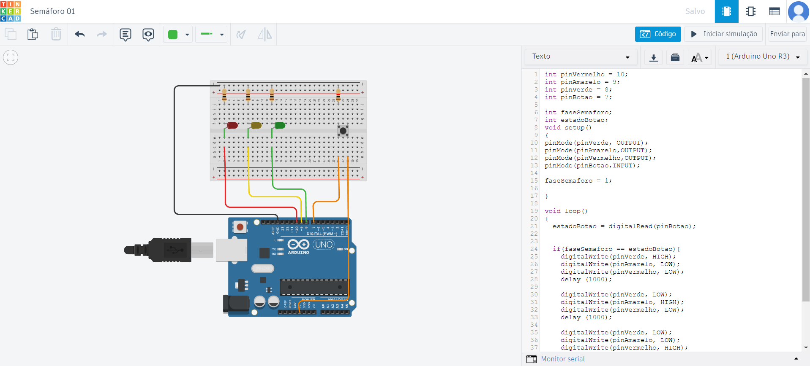

Tópicos Especiais em Eletrônica
2024-07-04
Chapter 1 Descrição da Matéria
1.1 Local e Horário
Local: Laboratório FabLab Camtuc - Sala 53 UFPA
Horário: Segunda e Quarta-feira, das 14h às 15h40h
1.2 Sobre a Matéria
A matéria de Tópicos Especiais em Eletrônica ira tratar sobre fabricação digital, ela esta sendo oferecida no FabLab Camtuc e é uma oportunidade para explorar as possibilidades da tecnologia moderna na criação e fabricação de objetos. Durante o curso, os discentes adquirão diversos conceitos sobre fabricação digital, aprendendo sobre algumas técnicas e ferramentas que permitem a realização de projetos criativos e funcionais.
1.3 Conteúdo do Curso
Máquinas CNC: Os discentes serão introduzidos ao mundo das máquinas de controle numérico computadorizado (CNC), conhecendo técnicas de corte a laser, fresadora de circuitos impressão 3D e muito mais. Será feito o treinamento para operar essas máquinas com precisão para que possa ser fabricado peças de alta qualidade.
Corte a Lazer: Será apresentado a Router CNC lazer que é a máquina presente no laboratório, onde os discentes terão a oportunidade de entender os princípios por trás do maquinário e como criar projetos por meio do software que podem ser transformados em objetos físicos.
Impressão 3D: Uma parte fundamental do curso será dedicada à tecnologia de impressão 3D. Os discentes terão a oportunidade de entender os princípios por trás da impressão 3D e como criar modelos digitais que podem ser transformados em objetos físicos tridimensionais.
Softwares de Desenhos e Modelagem 3D: Serão apresentados e explorados alguns softwares de desenho e modelagem 3D, permitindo que os discentes desenvolvam suas habilidades de design e manipulação digital. Eles aprenderão a criar modelos virtuais que podem ser posteriormente fabricados usando as máquinas disponíveis no FabLab.
Fresadora de Circuitos: O curso também abordará a fresadora de circuito impresso, maquinário bastante utilizado no laboratório para criação de circuitos eletrônicos.
1.4 Objetivos do Curso
Ao final da matéria, os participantes terão adquirido habilidades práticas e conhecimento teórico que lhes permitirão:
- Utilizar máquinas CNC de forma eficaz para fabricação de peças precisas.
- Dominar o processo de impressão 3D e criar objetos personalizados.
- Manipular softwares de desenho e modelagem para criar projetos digitais.
- Compreender os princípios da modelagem 3D e aplicá-los na prática.
- Explorar uma variedade de técnicas de fabricação digital para realizar projetos criativos e inovadores.
<!--chapter:end:index.Rmd-->
# Máquinas CNC
<p style='text-align: justify;'> As máquinas CNC (**Controle Numérico Computadorizado**) revolucionaram a indústria moderna, oferecendo precisão, eficiência e automação em uma variedade de processos de fabricação. Essas máquinas são equipadas com sistemas de controle computadorizado que permitem a execução de operações complexas de usinagem, corte, modelagem e outras tarefas com alta precisão e repetibilidade.</p>
## Origens
<p style='text-align: justify;'>A história das máquinas CNC remonta ao desenvolvimento dos primeiros sistemas de controle numérico nas décadas de 1940 e 1950. Inicialmente, esses sistemas eram controlados por **cartões perfurados** e, posteriormente, por **fitas magnéticas**, antes de evoluírem para computadores digitais nas décadas seguintes.</p>
<p style='text-align: justify;'>Hoje, as máquinas CNC abrangem uma ampla variedade de tipos e aplicações, desde tornos e fresadoras até cortadoras a laser e robôs industriais. Elas são essenciais em indústrias como a automotiva, aeroespacial, de fabricação de moldes, eletrônica, entre outras, onde a precisão e a automação são cruciais para a produção eficiente e de alta qualidade.</p>
<p style='text-align: justify;'>Com a crescente integração de tecnologias como inteligência artificial, aprendizado de máquina e Internet das Coisas (IoT), as máquinas CNC estão se tornando ainda mais avançadas, capazes de realizar operações complexas de forma autônoma e adaptativa, aumentando ainda mais sua importância na indústria moderna.</p>
## Teoria
<p style='text-align: justify;'>Atualmente, a usinagem CNC é um processo de fabricação popular com uma ampla gama de aplicações industriais. A usinagem CNC dos recursos atuais melhorou os recursos informatizados devido ao seu constante desenvolvimento. No entanto, vai muito além disso.</p>
<p style='text-align: justify;'>Em essência, a usinagem CNC é um processo automatizado onde máquinas controladas por computador realizam operações de remoção de material em uma peça de trabalho. O funcionamento é relativamente simples, mas os resultados são extraordinários. Um programa de computador traduz os desenhos ou modelos CAD (**Computer-Aided Design**) em comandos específicos para a máquina CNC. Esses comandos controlam a velocidade, posição e movimento das ferramentas de corte, permitindo a criação de peças com tolerâncias extremamente apertadas e detalhes intricados.</p>
<p style='text-align: justify;'>Uma das maiores vantagens da usinagem CNC é a sua capacidade de produzir peças altamente precisas e consistentes em grandes volumes. Uma vez que o programa é configurado corretamente, a máquina CNC pode repetir o mesmo processo várias vezes, mantendo a qualidade em cada peça produzida. Isso torna a usinagem CNC ideal para a fabricação em massa de componentes padronizados, desde pequenas peças de metal até grandes estruturas de plástico.</p>
<p style='text-align: justify;'>Além da precisão, a usinagem CNC oferece uma flexibilidade incomparável. Com a capacidade de criar uma ampla variedade de formas e tamanhos, as possibilidades de design são praticamente ilimitadas. Desde peças simples até complexas, a usinagem CNC pode lidar com uma variedade impressionante de geometrias, tornando-a uma escolha popular em indústrias como automotiva, aeroespacial, médica e de eletrônicos.</p>
<p style='text-align: justify;'>Outro benefício crucial da usinagem CNC é a sua eficiência. Ao eliminar a necessidade de intervenção manual significativa, os tempos de produção são reduzidos drasticamente, levando a prazos mais curtos e custos mais baixos. Além disso, a automação proporcionada pela usinagem CNC minimiza erros humanos e aumenta a consistência, resultando em menos refugos e retrabalho.</p>
<p style='text-align: justify;'>No entanto, é importante destacar que a usinagem CNC requer habilidades especializadas para **programação** e **operação das máquinas**. Os operadores devem ter conhecimento técnico sólido e familiaridade com software de CAD/CAM (**Computer-Aided Manufacturing**) para criar e otimizar programas de usinagem. Além disso, a **manutenção regular das máquinas CNC** é essencial para garantir um desempenho ótimo e prolongar sua vida útil.</p>
## Configurações da Máquina
### Operação
<p style='text-align: justify;'>As máquinas de corte a laser são complexas e versáteis, utilizadas em várias indústrias para cortes precisos e detalhados. Elas operam em diferentes modos, como cartesiana, rotacional e cinco eixos. As máquinas cartesianas movem o cabeçote de corte ao longo dos eixos X e Y em um padrão retangular, oferecendo precisão e simplicidade. Máquinas rotacionais possuem um eixo adicional, permitindo cortes em objetos cilíndricos, como tubos e canos. Já as máquinas de cinco eixos, comuns em centros de usinagem avançados, movem o cabeçote em cinco direções, possibilitando cortes tridimensionais e formas complexas.</p>
<p style='text-align: justify;'>A estrutura de uma máquina de corte a laser inclui uma base robusta, geralmente de aço, que fornece estabilidade e suporte para todos os componentes. O pórtico pode ser fixo ou móvel, com pórticos fixos oferecendo maior rigidez e precisão, enquanto os móveis permitem uma área de corte maior e flexibilidade. A mesa de corte suporta o material a ser cortado, podendo ter superfícies ajustáveis ou sistemas de vácuo para segurar o material no lugar.</p>
<p style='text-align: justify;'>Os eixos das máquinas incluem guias cilíndricas ou retangulares que direcionam o movimento dos componentes móveis. Guias cilíndricas oferecem movimento suave e preciso, enquanto guias retangulares proporcionam maior resistência. Os suportes de guia mantêm as guias no lugar e garantem o alinhamento correto. Pillow blocks são suportes para eixos rotativos e rolamentos lineares permitem movimento suave ao longo das guias. Patins são componentes que deslizam ao longo das guias, suportando o cabeçote de corte e outros componentes móveis.</p>
<p style='text-align: justify;'>Os motores utilizados nas máquinas de corte a laser variam. Motores de passo movem-se em incrementos discretos, proporcionando controle preciso do movimento. Motores DC/Servo oferecem controle mais dinâmico e preciso, frequentemente utilizados em aplicações de alta performance. Motores AC são mais robustos e podem lidar com cargas maiores, embora sejam menos comuns em máquinas de corte a laser de precisão. Acopladores flexíveis permitem alguma flexibilidade entre eixos conectados, absorvendo desalinhamentos menores, enquanto acopladores de "mandíbula" conectam eixos sem folga, garantindo precisão no movimento.</p>
<p style='text-align: justify;'>A transmissão do movimento é feita através de correias conectadas por polias. Polias lisas proporcionam movimento suave, enquanto polias dentadas oferecem maior controle e precisão. O sistema Core XY controla ambos os eixos X e Y simultaneamente, proporcionando um movimento mais rápido e preciso. Fusos transformam movimento rotativo em linear, com castanhas e mancais fornecendo suporte e rolamentos garantindo movimento suave.</p>
<p style='text-align: justify;'>A eletrônica das máquinas inclui uma placa de controle que gerencia o funcionamento da máquina, recebendo comandos e controlando os motores e o laser. Drivers de motor controlam a corrente e a tensão fornecidas aos motores, garantindo operação precisa. A fonte de alimentação fornece energia para todos os componentes eletrônicos, enquanto sistemas de acionamento e controle de potência regulam a saída do laser, ajustando a intensidade conforme necessário para diferentes materiais e cortes.</p>
### Software
<p style='text-align: justify;'>O software utilizado inclui firmware embarcado que controla a operação básica da máquina, como o GRBL, um firmware open-source popular para máquinas CNC e de corte a laser. O G-Code é a linguagem de programação usada para controlar essas máquinas. Softwares de controle como Candle, Mach 3 e Linux CNC interpretam o G-Code e enviam comandos para a máquina.<p style='text-align: justify;'>
### Segurança
<p style='text-align: justify;'>As ferramentas das máquinas de corte a laser podem incluir spindles, fresas e brocas para usinagem, além de opções para impressão com filamento, resina, metal, concreto, argila ou materiais orgânicos. Tipos de lasers utilizados incluem CO2, fibra e diodo, cada um com suas próprias características e aplicações. Além do corte, essas máquinas podem realizar outras operações como costura, corte de vinil, soldagem e injeção de materiais.</p>
<p style='text-align: justify;'>A segurança é essencial na operação de máquinas de corte a laser. É importante usar equipamentos de proteção individual, como óculos, luvas, máscaras e vestimentas adequadas, para garantir a segurança durante a operação.</p>
<!--chapter:end:01-maquinacnc.Rmd-->
# Desenho 2D e sua Aplicação na Usinagem CNC
## Teoria
<p style='text-align: justify;'>O desenho 2D vetorial é uma forma de representação gráfica que utiliza formas geométricas definidas por equações matemáticas para criar imagens planas. Ao contrário dos formatos de imagem baseados em pixels, como o bitmap, onde as informações são representadas pixel por pixel, o desenho vetorial é baseado em coordenadas e instruções de desenho, o que permite uma escalabilidade sem perda de qualidade.</p>
<p style='text-align: justify;'>As máquinas de corte CNC, como lasers, vinis e fresadoras, utilizam desenhos 2D vetoriais para realizar operações precisas de corte e gravação em uma variedade de materiais, como **metais, plásticos, madeira e tecidos**. Essas máquinas são controladas por computador e seguem as instruções de corte fornecidas pelos desenhos vetoriais.</p>
<p style='text-align: justify;'>No contexto da usinagem CNC, as operações possíveis com desenhos 2D vetoriais incluem **corte e rasterização**. O corte é realizado seguindo as linhas vetoriais definidas no desenho, enquanto a rasterização é usada para gravação ou marcação, onde a máquina percorre a área desejada em um padrão de varredura.</p>
<p style='text-align: justify;'>Além das operações padrão de corte e gravação, as máquinas CNC também podem incorporar **eixos rotativos** para realizar operações adicionais, como o corte de **peças cilíndricas** ou a gravação em **superfícies curvas**. Isso aumenta a versatilidade e as capacidades das máquinas de usinagem CNC.</p>
<p style='text-align: justify;'>Para criar desenhos 2D vetoriais, uma variedade de programas de design estão disponíveis, incluindo:</p>
- **Inkscape**: Uma poderosa ferramenta de design vetorial de código aberto, adequada para uma variedade de aplicações, desde design gráfico até desenhos técnicos para usinagem CNC.
- **Corel Draw**: Um software popular entre designers gráficos e profissionais de marketing, conhecido por sua facilidade de uso e recursos avançados de ilustração vetorial.
- **Adobe Illustrator**: Uma ferramenta líder no mercado para criação de gráficos vetoriais, amplamente utilizada em design de logotipos, ilustrações e arte vetorial para impressão e web.
<p style='text-align: justify;'>Os desenhos 2D vetoriais podem ser salvos em uma variedade de formatos, incluindo:</p>
- **PDF** (Portable Document Format): Um formato de arquivo amplamente utilizado para compartilhar documentos que preserva a qualidade e o layout do desenho vetorial.
- **SVG** (Scalable Vector Graphics): Um formato de arquivo XML baseado em vetores amplamente utilizado para gráficos na web e compatível com a maioria dos navegadores modernos.
<p style='text-align: justify;'>Partindo para uma diferença entre desenho vetorial e bitmap, que é evidenciado principalmente na forma como as imagens são representadas. Enquanto o bitmap consiste em uma grade de pixels, onde cada pixel contém informações de cor, o desenho vetorial é baseado em equações matemáticas que descrevem formas geométricas, como linhas, curvas e círculos. Essa diferença fundamental permite que os desenhos vetoriais sejam dimensionados indefinidamente sem perda de qualidade, enquanto os bitmaps tendem a perder definição à medida que são ampliados.</p>
<p style='text-align: justify;'>De modo geral, o desenho 2D vetorial desempenha um papel fundamental na usinagem CNC, fornecendo as instruções precisas necessárias para realizar operações de corte e gravação em uma ampla variedade de materiais. Sua natureza escalável e precisa, juntamente com a versatilidade das máquinas CNC, tornam essa combinação uma escolha poderosa para a fabricação moderna em diversas indústrias.</p>
<!--chapter:end:02-Desenho2D.Rmd-->
# Corte a Lazer
## Teoria
<p style='text-align: justify;'>Uma máquina de corte a laser opera através de um processo complexo que envolve diversas etapas para cortar, gravar ou marcar uma variedade de materiais. Tudo começa com a geração do **feixe laser** em um dispositivo especializado, como um tubo de **gás CO2** ou uma fonte de estado sólido, onde a energia elétrica é convertida em luz coerente. Esse feixe laser é então amplificado e direcionado para a cabeça de corte através de **espelhos e lentes**, onde é focalizado em um ponto muito pequeno para garantir cortes precisos.</p>
<p style='text-align: justify;'>Com a peça de trabalho posicionada na mesa da máquina, o feixe laser é movido ao longo das coordenadas **X, Y e Z**, seguindo um caminho específico determinado pelo desenho ou programa fornecido. Quando o feixe atinge a superfície do material, ele é absorvido e convertido em calor, levando o material a temperaturas extremamente altas. Dependendo das propriedades do material e dos parâmetros de corte ajustados, pode ocorrer fusão, vaporização ou ablação do material.</p>
<p style='text-align: justify;'>Para garantir resultados precisos e consistentes, vários parâmetros como potência do laser, velocidade de corte e taxa de alimentação são cuidadosamente controlados e ajustados de acordo com o tipo e a espessura do material. Além disso, sistemas de resfriamento, como fluxos de ar ou líquido refrigerante, são utilizados para dissipar o calor gerado durante o processo de corte, enquanto os resíduos são extraídos da área de trabalho para garantir uma operação limpa e segura.</p>
<p style='text-align: justify;'>Ao concluir o trajeto de corte conforme o programa, o feixe laser é desligado e a peça de trabalho é removida da máquina. Dependendo da aplicação, podem ser necessários processos adicionais, como limpeza ou acabamento das peças cortadas.</p>
<p style='text-align: justify;'>O corte à laser é um dos processos mais versáteis disponível no laboratório FabLab. Trata-se de um método de **manufatura subtrativa**, no qual um feixe de laser de alta potência é aplicado a um material para remover massa, permitindo cortes precisos ou gravações detalhadas na superfície.</p>
<p style='text-align: justify;'>O termo "**corte**" é reservado para processos em que o laser remove completamente o material, separando-o em duas partes distintas. Por outro lado, a "**gravação**" refere-se a trabalhos em baixa potência que apenas marcam a superfície do material, sem produzir um relevo significativo. Essa distinção é importante para fins de design e aplicação.</p>
<p style='text-align: justify;'>A máquina disposta no Fablab apresenta uma área de trabalho de 60cm por 40cm e potência máxima de corte de 80W. Como ja mencionado, a máquina a Laser do laboratório é de gás CO2, no entanto existem outros tipos de lasers, como diodo, estado sólido, fibra e lasers de outros gases, cada um com suas próprias características e aplicações específicas.</p>
{width=50% style="display:block; margin:0 auto;"}
<center>Fig 1: Máquina Router Laser CNC VS6040 Corte e Gravação</center>
{width=50% style="display:block; margin:0 auto;"}
<center>Fig 2: Área de trabalho Máquina</center>
{width=50% style="display:block; margin:0 auto;"}
<center>Fig 3: Bico do laser</center>
{width=50% style="display:block; margin:0 auto;"}
<center>Fig 4: Painel de comando e ajuste da mesa</center>
{width=50% style="display:block; margin:0 auto;"}
<center>Fig 5: Painel de controle de potência</center>
## Tipos de Máquinas e Materiais
<p style='text-align: justify;'>Quanto aos materiais, o corte à laser é particularmente eficaz em materiais como **madeira e acrílico**. Além disso, é possível gravar em uma variedade ainda mais ampla de materiais, incluindo **couro, jeans, tecidos não inflamáveis, aço inox e alumínio**. No entanto, é crucial observar que materiais derivados de petróleo nunca devem ser trabalhados em máquinas à laser, devido à liberação de vapores tóxicos durante o processo.</p>
<p style='text-align: justify;'>O corte à laser representa uma ferramenta poderosa na manufatura moderna, oferecendo precisão, versatilidade e eficiência em uma variedade de aplicações. Com a capacidade de cortar uma ampla gama de materiais e realizar gravações detalhadas, é uma tecnologia indispensável em FabLabs e em muitos outros ambientes de fabricação, impulsionando a criatividade e a inovação em todo o mundo.</p>
## Prática
<p style='text-align: justify;'>Para a prática de utilização da máquina de **corte a laser**, foi sugerido o modelo de uma **caixa** utilizando um projeto do site **MakerCase**. **MakerCase** é uma plataforma online que permite aos usuários criar caixas personalizadas ajustando dimensões e outros parâmetros, gerando automaticamente os arquivos necessários para o corte a laser.</p>
O modelo de caixa no **MakerCase** é uma excelente introdução às técnicas de corte a laser, pois inclui diversas características que demonstram a precisão e versatilidade da máquina. O site permite que você ajuste o tamanho, a espessura do material e o tipo de junta que deseja utilizar, como encaixes de dedo ou entalhes de encaixe simples.
O processo começa com a personalização do modelo no **MakerCase**. Após definir as dimensões da caixa e as especificações do material, o site gera automaticamente um arquivo no formato **svg** ou **dxf**, compatível com a maioria dos softwares de corte a laser. Depois de importar o arquivo para o software de controle da máquina, ajustei as configurações do **laser**, como potência e velocidade, de acordo com o material utilizado. No meu caso, pode ser utilizado um **papelão de 3mm**, um material comum e fácil de cortar com precisão. Na figura abaixo, podemos visualizar a tabela de potências de acordo com cada material.
{width=50% style="display:block; margin:0 auto;"}
<center>Fig 6: Tabela de potências de acordo com o material.</center>
Uma vez que as configurações estão ajustadas, o próximo passo é posicionar a folha de **MDF** na mesa de corte da máquina, garantindo que esteja fixa para evitar qualquer movimento durante o corte. Em seguida, o software gera o **G-Code**, que é enviado para a máquina para iniciar o corte.
O corte a laser segue o contorno exato do modelo, criando as peças com bordas limpas e precisas. Após o corte, as peças são removidas da máquina e qualquer resíduo ou chamuscado pode ser limpo com uma lixa fina. Podemos visualizar a interface do software **K40 Whisperer** utilizado para fazer a comunicação com a máquina.
{width=50% style="display:block; margin:0 auto;"}
<center>Fig 7: Interface do software K40 Whisperer.</center>
A peça para o corte pode ser vista na figura abaixo, foi uma peça simples, apenas para verificação e exemplo.
{width=50% style="display:block; margin:0 auto;"}
<center>Fig 8: Máquina cortando a peça.</center>
{width=50% style="display:block; margin:0 auto;"}
<center>Fig 9: Peça cortada.</center>
<!--chapter:end:03-cortealaser.Rmd-->
# Desenho 3D
## Teoria
<p style='text-align: justify;'>**Desenho 3D** compreende desenhos feitos em software **CAD** (Computer-Aided Design) para descrever objetos tridimensionais que podem ser impressos com manufatura aditiva ou fabricados com usinagem (manufatura subtrativa).</p>
Tal como no desenho 2D, no **desenho 3D** temos descrições **vetoriais** e **bitmap**.
<p style='text-align: justify;'>A descrição **vetorial** é, da mesma forma que o 2D, um arquivo de código contendo informações sobre a geometria 3D do objeto. No entanto, a descrição é bem mais complicada, pois as operações 3D são mais complexas do que aquelas feitas no plano, por exemplo, **extrusão**, **corte**, etc.</p>
<p style='text-align: justify;'>Arquivos **bitmap** 3D são menos comuns, mas tendem a se tornar menos raros à medida que a tecnologia de **escaneamento 3D** baratear. A menor unidade de informação de um sólido bitmap é chamada de **voxel** (ao invés de pixel).</p>
<p style='text-align: justify;'>Na prática, o desenho 3D começa com a escolha de um software CAD adequado às necessidades do projeto. **Solidworks**, **FreeCad** e **Autodesk Fusion** são algumas das opções mais populares e cada um oferece um conjunto específico de ferramentas e funcionalidades para a criação de modelos 3D.</p>
<p style='text-align: justify;'>**Solidworks** é amplamente utilizado na indústria devido à sua interface intuitiva e poderosas capacidades de modelagem. Ele suporta uma vasta gama de operações 3D, desde simples extrusões até complexas montagens de múltiplos componentes. Além disso, o Solidworks possui ferramentas avançadas para simulação e análise, permitindo aos engenheiros validar seus projetos antes da fabricação.</p>
<p style='text-align: justify;'>**FreeCad** é uma opção open-source que oferece flexibilidade e uma ampla gama de módulos para diferentes tipos de projetos. Embora possa ter uma curva de aprendizado mais acentuada, é uma excelente escolha para quem busca uma alternativa gratuita e altamente personalizável para desenho 3D.</p>
<p style='text-align: justify;'>**Autodesk Fusion 360** combina funcionalidades robustas de CAD com capacidades de CAM (Computer-Aided Manufacturing) e CAE (Computer-Aided Engineering) em uma única plataforma baseada na nuvem. Isso facilita a colaboração em equipe e o acesso aos projetos a partir de qualquer lugar. Fusion 360 é especialmente popular entre designers e engenheiros que trabalham em startups e pequenas empresas devido ao seu modelo de licenciamento acessível e integração com outras ferramentas da Autodesk.</p>
<p style='text-align: justify;'>A criação de um modelo 3D geralmente começa com esboços bidimensionais, que são então transformados em formas tridimensionais através de operações como **extrusão**, **revolução**, **varredura** e **lofting**. Essas operações permitem construir formas complexas a partir de perfis simples. Além disso, o software CAD oferece ferramentas para aplicar fillet (arredondamento), chamfer (chanfro) e outras modificações geométricas para refinar o modelo.</p>
<p style='text-align: justify;'>Após a modelagem, o arquivo 3D pode ser exportado em formatos compatíveis com impressoras 3D ou máquinas de usinagem CNC, como **STL**, **OBJ** ou **STEP**. Para manufatura aditiva, o modelo é fatiado em camadas finas que a impressora 3D constrói uma a uma. Para manufatura subtrativa, o software CAM gera o código G necessário para que a máquina CNC execute as operações de corte e fresagem.</p>
<p style='text-align: justify;'>A prática do desenho 3D não só envolve habilidades técnicas de uso do software, mas também um entendimento profundo dos princípios de engenharia e design, garantindo que os modelos criados sejam funcionais, fabricáveis e atendam às especificações do projeto.</p>
## Prática
<p style='text-align: justify;'>Foi desenhado uma peça quadrada com um furo no meio no Fusion 360, que foi realizado seguindo os seguintes passos. </p>
<p style='text-align: justify;'>Comece abrindo o software e criando um novo projeto, salvando-o com um nome adequado para facilitar a organização. Em seguida, clique no ícone de "Create Sketch" na barra de ferramentas e escolha o plano onde deseja criar o esboço, como o plano XY. Selecione a ferramenta "Rectangle" (Retângulo) no menu de esboço, clique em um ponto no plano para definir o primeiro vértice do quadrado e arraste o mouse para definir a segunda esquina, inserindo as dimensões de 50mm x 50mm para criar um quadrado perfeito.</p>
<p style='text-align: justify;'>Após desenhar o quadrado, use a ferramenta "Dimension" para garantir que os lados do quadrado tenham exatamente 50mm, ajustando as dimensões conforme necessário. Em seguida, selecione a ferramenta "Circle" (Círculo) no menu de esboço e clique no centro do quadrado para desenhar um círculo. Defina o diâmetro do círculo, por exemplo, 20mm, inserindo o valor nas dimensões exibidas ao lado do círculo.</p>
<p style='text-align: justify;'>Depois de definir as dimensões do círculo, finalize o esboço clicando no botão "Finish Sketch". Para extrudar o quadrado e transformá-lo em um objeto 3D, selecione a ferramenta "Extrude" no menu de modelagem, clique na área do quadrado e insira a altura desejada, como 10mm. Certifique-se de que o círculo no centro não seja extrudado, deixando o furo conforme o planejado.</p>
<p style='text-align: justify;'>Revise o modelo 3D para garantir que todas as dimensões e características estejam corretas. Se necessário, faça ajustes utilizando as ferramentas de edição disponíveis no Fusion 360. Após confirmar que o modelo está correto, salve o projeto e exporte o arquivo no formato desejado, como STL ou STEP, para uso em impressão 3D ou usinagem CNC.</p>
{width=50% style="display:block; margin:0 auto;"}
<center>Fig 10: Peça com furo feita no Fusion 360.</center>
<!--chapter:end:04-desenho3D.Rmd-->
# Impressão 3D
## Teoria
<p style='text-align: justify;'>A **impressão 3D** é um processo que tem ganhado destaque recentemente devido ao barateamento das impressoras de mesa. O nome técnico correto é **manufatura aditiva por deposição de filamento**. Este processo envolve a criação de objetos tridimensionais através da adição sequencial de material em camadas, ao contrário da **manufatura subtrativa**, que remove material de um bloco maior para formar o objeto final.</p>
<p style='text-align: justify;'>A **manufatura aditiva** é um processo onde o objeto é fabricado a partir de deposição de pequenas quantidades de material sobre uma base que é progressivamente construída. Esse método oferece várias vantagens em comparação à manufatura subtrativa, incluindo a redução significativa de resíduos, a capacidade de criar geometria complexa que seria impossível ou impraticável com métodos tradicionais, e a eficiência em termos de materiais e energia.</p>
<p style='text-align: justify;'>Na manufatura aditiva, a **cadeia de produção** começa com a criação de um modelo digital em um software CAD (Computer-Aided Design). Este modelo é então fatiado em camadas finas usando um software específico, gerando um arquivo contendo instruções para a impressora 3D. Durante o processo de impressão, a máquina deposita material camada por camada até que o objeto completo esteja formado.</p>
### Tipos de Impressão 3D
<p style='text-align: justify;'>A **impressão 3D por deposição de filamento**, ou FDM (Fused Deposition Modeling), é a forma mais comum de impressão 3D em pequena escala. Neste processo, um filamento de material termoplástico é aquecido até se tornar maleável e então extrudido através de um bico que se move de acordo com as instruções do modelo digital. À medida que o filamento é depositado, ele esfria e solidifica, formando camadas sucessivas que resultam no objeto final.</p>
<p style='text-align: justify;'>Além da impressão por deposição de filamento, existem outros tipos importantes de impressão 3D, cada um com suas próprias características e aplicações:</p>
<p style='text-align: justify;'>**Impressão de Resina (Fotopolimerização):**
Também conhecida como **SLA** (Stereolithography) ou **DLP** (Digital Light Processing), este processo utiliza uma resina líquida que é solidificada camada por camada por meio de uma fonte de luz, como um laser ou um projetor de luz ultravioleta. A fotopolimerização oferece alta precisão e detalhamento, sendo ideal para protótipos complexos e peças pequenas.</p>
<p style='text-align: justify;'>**Impressão com Pó:**
Este método, que inclui tecnologias como **SLS** (Selective Laser Sintering) e **Binder Jetting**, envolve a deposição de uma camada fina de pó que é seletivamente fundida ou aglutinada por um laser ou agente de ligação. O excesso de pó serve como suporte durante a impressão, permitindo a criação de estruturas complexas sem necessidade de suportes adicionais. Este método é adequado para uma ampla gama de materiais, incluindo metais, plásticos e cerâmicas.</p>
<p style='text-align: justify;'>**Impressão com Solda:**
Neste processo, materiais metálicos são derretidos e depositados camada por camada usando um bico de solda. A **impressão com solda** é particularmente útil para a fabricação de peças metálicas grandes e robustas, e é frequentemente usada em aplicações industriais onde a resistência mecânica é crítica.</p>
### Vantagens da Impressão 3D
<p style='text-align: justify;'>A impressão 3D oferece várias vantagens significativas sobre os métodos tradicionais de fabricação. A capacidade de criar protótipos rápidos permite um ciclo de desenvolvimento mais ágil, onde designers e engenheiros podem iterar rapidamente suas ideias. Além disso, a personalização em massa é facilitada, permitindo a produção de peças únicas ou personalizadas sem a necessidade de moldes caros.</p>
<p style='text-align: justify;'>Outra vantagem é a possibilidade de criar geometria complexa e formas orgânicas que seriam impossíveis com métodos de manufatura tradicionais. Estruturas internas complexas, canais de resfriamento internos e outras características sofisticadas podem ser integradas diretamente no processo de design e fabricação.</p>
<p style='text-align: justify;'>Apesar de suas muitas vantagens, a impressão 3D também enfrenta alguns desafios. A qualidade superficial das peças pode não ser tão alta quanto a obtida com métodos tradicionais, e a resistência mecânica das peças impressas pode ser inferior devido à natureza camada-a-camada do processo. Além disso, a velocidade de impressão pode ser um fator limitante em comparação com métodos de produção em massa.</p>
<p style='text-align: justify;'>No entanto, a pesquisa e o desenvolvimento contínuos na área de impressão 3D estão constantemente abordando esses desafios. Novos materiais, técnicas de impressão mais rápidas e precisas, e melhorias no software estão expandindo as capacidades da impressão 3D. À medida que a tecnologia evolui e se torna mais acessível, espera-se que a impressão 3D desempenhe um papel cada vez mais importante na manufatura moderna, transformando como produtos são projetados, prototipados e produzidos.</p>
## Prática
<p style='text-align: justify;'>Para a prática sobre impressão 3D, comecei selecionando um desenho no site **Thingiverse**, uma plataforma popular para compartilhamento de modelos 3D. Thingiverse oferece uma ampla variedade de projetos, desde simples utilitários domésticos até complexas figuras decorativas. O modelo escolhido foi baixado no formato **.stl**, um formato padrão para arquivos 3D.</p>
<p style='text-align: justify;'>Depois de baixar o modelo, utilizei o software **Ultimaker Cura** para preparar o arquivo para impressão. O Ultimaker Cura é um software de fatiamento, ou seja, ele converte o modelo 3D em camadas finas que a impressora 3D pode construir uma a uma. Primeiramente, importei o arquivo .stl para o Cura. Em seguida, ajustei as configurações de impressão, como altura da camada, densidade de preenchimento e temperatura do bico. Essas configurações dependem do tipo de material utilizado, que no meu caso foi **PLA**.</p>
<p style='text-align: justify;'>Com todas as configurações ajustadas, o Cura gerou o **G-code**, que contém as instruções específicas para a impressora 3D seguir durante o processo de impressão. Este arquivo foi então salvo em um cartão SD.</p>
<p style='text-align: justify;'>O próximo passo foi inserir o cartão SD na **impressora 3D** e iniciar o processo de impressão. A impressora começou a trabalhar, depositando camada por camada de filamento fundido conforme as instruções do G-code. Durante o processo, monitorei a impressão para garantir que tudo estivesse ocorrendo conforme o planejado, ajustando a temperatura e a velocidade de impressão se necessário.</p>.
{width=50% style="display:block; margin:0 auto;"}
<center>Fig 11: Impressora 3D do laboratório.</center>
<p style='text-align: justify;'>Após a conclusão da impressão, aguardei uns segundos antes de removê-la da plataforma de impressão para evitar deformações. O resultado final foi uma peça com detalhes precisos e uma superfície razoavelmente lisa, demonstrando a eficiência da combinação de um bom modelo 3D, um software de fatiamento eficaz como o Ultimaker Cura, e uma impressora 3D bem calibrada.</p>
{width=50% style="display:block; margin:0 auto;"}
<center>Fig 12: Impressora 3D no processo.</center>
{width=50% style="display:block; margin:0 auto;"}
<center>Fig 13: Impressora 3D.</center>
<p style='text-align: justify;'>Essa prática de impressão 3D ilustrou claramente as etapas envolvidas desde a escolha do modelo até a produção do objeto físico, além de destacar a importância das configurações corretas e do monitoramento durante o processo de impressão.</p>
<!--chapter:end:05-impressao.Rmd-->
# Soldagem Eletrônica
## Teoria
<p style='text-align: justify;'>**Soldagem eletrônica** é um processo fundamental na fabricação e montagem de circuitos eletrônicos. Este tipo de soldagem envolve a junção de componentes eletrônicos a uma placa de circuito impresso (PCI) usando uma liga de estanho, frequentemente combinada com chumbo, prata ou cobre, para criar conexões elétricas permanentes e de baixa resistência.</p>
<p style='text-align: justify;'>Os **circuitos impressos** (PCIs) são essenciais para a interligação de módulos eletrônicos e circuitos integrados, permitindo a realização de funções eletrônicas complexas, sejam elas digitais ou analógicas. Ao contrário dos circuitos montados em **protoboards**, que são utilizados principalmente para prototipagem e testes, os circuitos em PCIs oferecem confiabilidade e durabilidade superiores. Protoboards são suscetíveis a problemas de mau contato e não são adequados para produtos finais devido à sua natureza temporária e instável.</p>
<p style='text-align: justify;'>A soldagem eletrônica garante que os componentes estejam firmemente fixados à PCI, proporcionando conexões estáveis e duráveis. Saber soldar corretamente é crucial não apenas para a construção de circuitos personalizados, mas também para a manutenção e reparo de dispositivos eletrônicos.</p>
## Processo de Soldagem Eletrônica
<p style='text-align: justify;'>O processo de soldagem eletrônica envolve várias etapas e a utilização de ferramentas específicas:</p>
**1. Ferramentas e Materiais:**
- **Ferro de Solda:** Ferramenta aquecida que é usada para derreter a liga de solda.
- **Liga de Solda:** Material usado para fazer a conexão elétrica. A liga mais comum é uma mistura de estanho e chumbo (60/40), embora ligas sem chumbo, como estanho-prata-cobre (SAC), estejam se tornando mais populares devido a regulamentações ambientais.
- **Fluxo:** Substância química que ajuda a limpar e preparar a superfície para soldagem, promovendo a aderência da solda.
- **Sugador de Solda e Malha Dessoldadora:** Ferramentas usadas para remover solda excessiva ou corrigir erros de soldagem.
**2. Preparação:**
Antes de iniciar a soldagem, é importante preparar a PCI e os componentes. Isso inclui a limpeza das superfícies de contato para remover qualquer oxidação ou sujeira que possa impedir a aderência da solda. O fluxo é aplicado nas áreas a serem soldadas para melhorar a qualidade da junção.
**3. Técnicas de Soldagem:**
- **Aquecimento:** O ferro de solda é aquecido até a temperatura adequada (geralmente entre 350°C e 400°C). A ponta do ferro de solda deve ser limpa regularmente em uma esponja úmida para remover resíduos de solda e fluxo.
- **Aplicação de Solda:** A ponta do ferro de solda é colocada em contato com a junta a ser soldada, aquecendo tanto o terminal do componente quanto a trilha da PCI. Em seguida, a liga de solda é alimentada na junta aquecida, derretendo e fluindo para formar a conexão.
- **Resfriamento:** Após a aplicação da solda, a junta deve ser deixada para esfriar naturalmente, solidificando a conexão. É importante evitar movimentos bruscos durante este processo para não comprometer a integridade da solda.
**4. Verificação:**
Depois de completar a soldagem, é crucial inspecionar as juntas de solda para garantir que estejam bem formadas, brilhantes e livres de defeitos como rachaduras, bolhas ou excesso de solda. Juntas frias ou mal formadas podem levar a falhas de conexão e devem ser reheated e corrigidas.
## Prática
Durante a prática, foi disponibilizado uma placa de circuito impresso para treinamento, onde esta seneo inserido e removido alguns componenetes, como pode-se observar nas figuras abaixo.
{width=50% style="display:block; margin:0 auto;"}
<center>Fig 14: Soldagem na PCI.</center>
{width=50% style="display:block; margin:0 auto;"}
<center>Fig 15: Solgadem na PCI.</center>
<!--chapter:end:06-Soldagem.Rmd-->
# Circuito Impresso
## Teoria
<p style='text-align: justify;'>A fabricação de circuitos impressos (PCBs, do inglês Printed Circuit Boards) é fundamental para o desenvolvimento de dispositivos eletrônicos, pois permite a criação de interconexões estáveis e compactas entre componentes eletrônicos. Os métodos mais comuns para a fabricação de PCBs são a corrosão química e a usinagem mecânica.</p>
### Corrosão
<p style='text-align: justify;'>O processo de corrosão é um método tradicional e amplamente utilizado. Inicialmente, utiliza-se uma placa base, geralmente feita de fibra de vidro revestida com uma fina camada de cobre. O layout do circuito é então transferido para a placa através de um processo fotossensível, onde uma máscara de proteção (geralmente um fotomáscara) é aplicada. A placa é imersa em uma solução química, como percloreto de ferro, que dissolve o cobre exposto, deixando apenas as trilhas protegidas pela máscara. </p>
<p style='text-align: justify;'>Após a corrosão, a máscara de proteção é removida, revelando as trilhas de cobre que formam o circuito. Em seguida, são perfurados os furos necessários para a montagem dos componentes. Por fim, aplica-se uma camada de estanho ou outro material para proteger as trilhas de cobre e facilitar a soldagem dos componentes.</p>
### Usiangem
<p style='text-align: justify;'>Por outro lado, o processo de usinagem, embora mais trabalhoso e caro, oferece vantagens ecológicas por gerar menos resíduos químicos. Esse método também começa com uma placa de base revestida de cobre. O layout do circuito é programado em uma máquina CNC (Controle Numérico Computadorizado). A máquina CNC remove mecanicamente o cobre indesejado, deixando as trilhas desejadas intactas. A própria máquina CNC pode perfurar os orifícios necessários para a montagem dos componentes. Tal como no processo de corrosão, uma camada protetora é aplicada antes da soldagem dos componentes</p>.
### Produção de um circuito impresso
<p style='text-align: justify;'>A produção de PCBs, mesmo em escala semi-profissional, envolve um fluxo de trabalho bem definido, que pode ser dividido em várias etapas. O processo começa com o projeto do esquemático lógico, onde se define a conexão lógica entre os componentes eletrônicos. Utilizam-se softwares especializados, como o Eagle ou o KiCad, para desenhar o esquemático. Com base no esquemático, desenha-se o layout das trilhas e a posição dos furos na placa. Ferramentas de software ajudam a otimizar o traçado das trilhas para minimizar interferências e maximizar a eficiência do circuito.</p>
<p style='text-align: justify;'>Em seguida, prepara-se a placa para os processos subsequentes. No caso de usinagem, isso envolve definir o plano de corte que a máquina CNC seguirá. Seja por corrosão ou usinagem, a próxima etapa resulta na criação física das trilhas e furos na placa. Em placas de dupla-face, vias são utilizadas para conectar trilhas entre as duas faces da placa. Isso é feito através de furações revestidas. Uma máscara de solda pode ser aplicada para proteger áreas da placa onde não se deseja que a solda adira, ajudando a prevenir curtos-circuitos e facilitando a soldagem. </p>
<p style='text-align: justify;'>Os componentes eletrônicos são então posicionados e soldados nas suas respectivas posições. A soldagem pode ser feita manualmente ou através de máquinas de soldagem por onda. Finalmente, uma camada de silk-screen é impressa na placa para rotular componentes e fornecer outras informações úteis, como o logo do fabricante e o número da versão do PCB.</p>
<p style='text-align: justify;'>A fabricação de PCBs combina design eletrônico com técnicas de fabricação para produzir placas que são a base de praticamente todos os dispositivos eletrônicos modernos. A escolha entre corrosão e usinagem depende de fatores como custo, volume de produção e preocupações ambientais. Em ambos os casos, seguir um fluxo de trabalho bem definido e utilizar ferramentas de software adequadas é essencial para garantir a qualidade e a confiabilidade dos circuitos impressos produzidos. Além disso, a constante evolução das tecnologias de fabricação e dos materiais utilizados promete continuar melhorando a eficiência e a sustentabilidade dos processos de fabricação de PCBs, tornando-os ainda mais adequados para as necessidades do mercado atual e futuro.</p>
Na figura abaixo, pode-se perceber um circuito impresso simples que foi produzido durante a prática, observa-se a trinha e os furos feitos na placa. A placa também foi usada para a prática de soldagem, feito no capítulo anterior.
{width=50% style="display:block; margin:0 auto;"}
<center>Fig 16: Circuito impresso simples.</center>
<!--chapter:end:07-circuito.Rmd-->
# Plotter
## Teoria
<p style='text-align: justify;'>Uma plotter é uma impressora especializada utilizada principalmente para a produção de gráficos de grandes dimensões, como plantas arquitetônicas, mapas, gráficos de engenharia e sinalizações. Diferente das impressoras tradicionais, as plotters desenham linhas contínuas em vez de pontos individuais, o que lhes permite produzir desenhos com alta precisão e detalhes finos.</p>
<p style='text-align: justify;'>As primeiras plotters, desenvolvidas nos anos 1950 e 1960, utilizavam braços mecânicos para movimentar canetas sobre o papel. Com o avanço da tecnologia, surgiram plotters de jato de tinta e a laser, que substituíram as canetas por cabeçotes de impressão e feixes de laser, respectivamente.</p>
<p style='text-align: justify;'>Existem vários tipos de plotters, cada um com suas características específicas. A plotter de caneta, também conhecida como plotter vetorial, usa uma caneta para desenhar no papel, movendo-se ao longo dos eixos X e Y. Este tipo é ideal para desenhos de linhas, como plantas arquitetônicas e diagramas técnicos, oferecendo alta precisão e capacidade de criar desenhos detalhados, embora a velocidade de impressão seja relativamente lenta.</p>
<p style='text-align: justify;'>A plotter de jato de tinta, ou raster, utiliza cartuchos de tinta para pulverizar tinta sobre o papel, semelhante a uma impressora a jato de tinta convencional, mas em maior escala. Esse tipo pode imprimir em cores e é mais rápido que a plotter de caneta, embora ofereça menor precisão em desenhos vetoriais.</p>
<p style='text-align: justify;'>A plotter de corte, em vez de desenhar, utiliza uma lâmina para cortar materiais como vinil, papelão e tecido. Este tipo é amplamente usado na fabricação de adesivos, decalques e sinalizações, mas é limitado a tarefas de corte e não pode imprimir.</p>
<p style='text-align: justify;'>Já a plotter a laser usa um feixe de laser para desenhar ou cortar materiais, sendo altamente precisa e rápida, capaz de trabalhar com materiais mais duros. No entanto, é mais cara e requer manutenção especializada.</p>
<p style='text-align: justify;'>Os componentes principais de uma plotter incluem a cabeça de impressão/corte, que realiza o desenho ou corte; os eixos de movimento (X e Y), responsáveis pelo movimento da cabeça de impressão/corte sobre o material; a superfície de impressão/corte, onde o material é colocado; e o controlador eletrônico, que interpreta os comandos enviados do computador e move a cabeça de impressão/corte de acordo.</p>
<p style='text-align: justify;'>As plotters são usadas em diversas indústrias devido à sua capacidade de produzir gráficos de grandes dimensões com alta precisão. Na arquitetura e engenharia, são usadas para imprimir plantas, diagramas técnicos e mapas. Na publicidade e design gráfico, produzem banners, cartazes e sinalizações. Na moda e têxtil, são usadas para cortar padrões em tecido e outros materiais. Na automotiva e manufatura, ajudam na criação de protótipos e peças personalizadas.</p>
<p style='text-align: justify;'>As principais vantagens das plotters incluem alta precisão e qualidade de impressão/corte, capacidade de trabalhar com grandes formatos e versatilidade para diversas aplicações e materiais. No entanto, elas também apresentam desvantagens, como custo elevado de aquisição e manutenção, necessidade de espaço físico significativo e necessidade de operadores treinados para manuseio e manutenção adequada.</p>
<p style='text-align: justify;'>As plotters são ferramentas essenciais em muitos setores devido à sua capacidade de produzir gráficos detalhados e de grande escala. Com a evolução tecnológica, tornaram-se mais versáteis e eficientes, atendendo a uma ampla gama de necessidades industriais e comerciais.</p>
## Prática
A figura 17 mostra a plotter que foi utilizada para prática da atividade.
{width=60% style="display:block; margin:0 auto;"}
<center>Fig 17: Plotter disposta no Fablab.</center>
Na figura 18, o software que faz a comunicação com a plotter, juntamente com o desenho proposto que foi usado para teste.
{width=60% style="display:block; margin:0 auto;"}
<center>Fig 19: Desenho no software.</center>
E na figura 19, pode-se observar o resultado do corte da plotter.
{width=50% style="display:block; margin:0 auto;"}
<center>Fig 19: Corte da plotter.</center>
<!--chapter:end:08-plotter.Rmd-->
# Arduino e Programação
## Teoria
<p style='text-align: justify;'>O Arduino foi criado em 2005 por um grupo de estudantes e professores do Instituto de Design de Interação de Ivrea, na Itália. Seu objetivo era fornecer uma plataforma de baixo custo e fácil de usar para estudantes e entusiastas de eletrônica. A filosofia do Arduino é baseada em três princípios: acessibilidade, facilidade de uso e comunidade colaborativa.</p>
<p style='text-align: justify;'>O Arduino é uma plataforma de prototipagem eletrônica de código aberto baseada em hardware e software fáceis de usar. É projetada para tornar a eletrônica mais acessível a todos, desde iniciantes até profissionais. A plataforma Arduino permite a criação de projetos eletrônicos interativos, onde sensores e atuadores são controlados por um microcontrolador programável.<p style='text-align: justify;'>
### Componentes Básicos do Arduino
<p style='text-align: justify;'>**Placas Arduino**: As placas Arduino vêm em várias formas e tamanhos, cada uma adequada para diferentes tipos de projetos: Arduino Uno, Mega e nano são os mais comuns.</p>
<p style='text-align: justify;'>**O microcontrolador**: È o "cérebro" da placa Arduino. Ele executa o código carregado na placa e controla as interações entre os diferentes componentes conectados. Os microcontroladores mais comuns nas placas Arduino são os da série ATmega da Atmel.</p>
<p style='text-align: justify;'>**Pinos de Entrada/Saída**: As placas Arduino possuem pinos de entrada/saída (I/O) que podem ser configurados como digitais ou analógicos. Esses pinos são usados para conectar sensores, atuadores e outros dispositivos. Os **Pinos Digitais** são Usados para ler ou enviar sinais digitais (0 ou 5V). E os **Pinos Analógicos** são Usados para ler sinais analógicos (0-1023) ou enviar sinais PWM.</p>
<p style='text-align: justify;'>**Fonte de Alimentação**: As placas Arduino podem ser alimentadas via USB ou através de uma fonte externa (bateria ou adaptador AC-DC). A maioria das placas possui um regulador de tensão que garante que a alimentação fornecida ao microcontrolador seja estável.</p>
### Ambiente de Desenvolvimento Arduino (IDE)
<p style='text-align: justify;'>O Arduino IDE (Integrated Development Environment) é o software usado para escrever, compilar e carregar programas (chamados sketches) nas placas Arduino. Ele é projetado para ser fácil de usar, mesmo para aqueles sem experiência prévia em programação.</p>
{width=50% style="display:block; margin:0 auto;"}
<center>Fig 20: Arduino IDE.</center>
## Linguagem de Programação Arduino
<p style='text-align: justify;'>A programação Arduino é baseada em uma linguagem derivada do C/C++, simplificada para facilitar o uso. Um sketch Arduino possui duas funções principais:</p>
1. **setup()**: Executada uma vez no início, usada para configurar pinos de I/O e outras configurações iniciais.
2. **loop()**: Executada repetidamente, contém o código principal do programa.
### Estrutura Básica de um Sketch
```cpp
void setup() {
// Configurações iniciais
}
void loop() {
// Código principal que será executado repetidamente
}O Arduino possui uma vasta coleção de bibliotecas que facilitam a interface com diversos sensores, atuadores e outros dispositivos. As bibliotecas fornecem funções e métodos pré-definidos que simplificam a programação de tarefas complexas.
A comunicação entre o Arduino e outros dispositivos é fundamental para muitos projetos. O Arduino suporta diversos protocolos de comunicação, como serial, I2C e SPI.
A comunicação serial é uma das formas mais comuns de comunicação com o Arduino. Utiliza os pinos RX (receber) e TX (transmitir) e permite a troca de dados entre o Arduino e outros dispositivos, como um computador.
- Serial.begin(baudrate): Inicializa a comunicação serial com uma taxa de transmissão específica.
- Serial.print() / Serial.println(): Envia dados para o monitor serial.
- Serial.read() / Serial.available(): Lê dados recebidos.
A programação direcionada ao Arduino é uma habilidade poderosa que permite transformar ideias em realidade. A plataforma Arduino, com sua combinação de hardware acessível e software fácil de usar, é ideal para iniciantes e profissionais. Desde projetos educacionais simples até aplicações complexas em automação, robótica e IoT, o Arduino oferece uma base sólida para a inovação eletrônica. Com uma compreensão profunda do hardware e software do Arduino, você estará bem equipado para explorar as infinitas possibilidades dessa incrível plataforma.
1.5 Tinkercad
Tinkercad é uma ferramenta online gratuita de design 3D, circuitos eletrônicos e modelagem baseada em blocos, desenvolvida pela Autodesk. É especialmente popular entre iniciantes devido à sua interface intuitiva e facilidade de uso, permitindo que usuários transformem suas ideias em projetos físicos rapidamente.
O Tinkercad permite a criação de modelos 3D a partir de formas geométricas básicas, que podem ser combinadas e manipuladas para formar objetos mais complexos. Os usuários podem exportar seus modelos em formatos como STL, OBJ e SVG, adequados para impressão 3D e outras aplicações de fabricação digital. Além disso, o Tinkercad suporta a exportação de designs compatíveis com o jogo Minecraft, permitindo que os usuários criem e importem suas construções para o ambiente do jogo.
A plataforma também inclui um módulo para a criação e simulação de circuitos eletrônicos, chamado Tinkercad Circuits. Essa ferramenta permite que os usuários projetem circuitos, adicionem componentes eletrônicos (como resistores, LEDs, sensores e microcontroladores) e simulem o comportamento do circuito diretamente na plataforma. É uma excelente ferramenta educativa para aprender conceitos de eletrônica e programação de microcontroladores como o Arduino.
Para usuários interessados em programação, o Tinkercad oferece uma interface de programação baseada em blocos, semelhante ao Scratch, que facilita a criação de código para controlar circuitos e dispositivos. Isso é particularmente útil para iniciantes que estão aprendendo lógica de programação e como integrar software com hardware.

Pode-se observar na figura abaixo um circuito de um semáforo desenvolvido na plataforma tinkercad e feito a programação ao lado na barra código.
